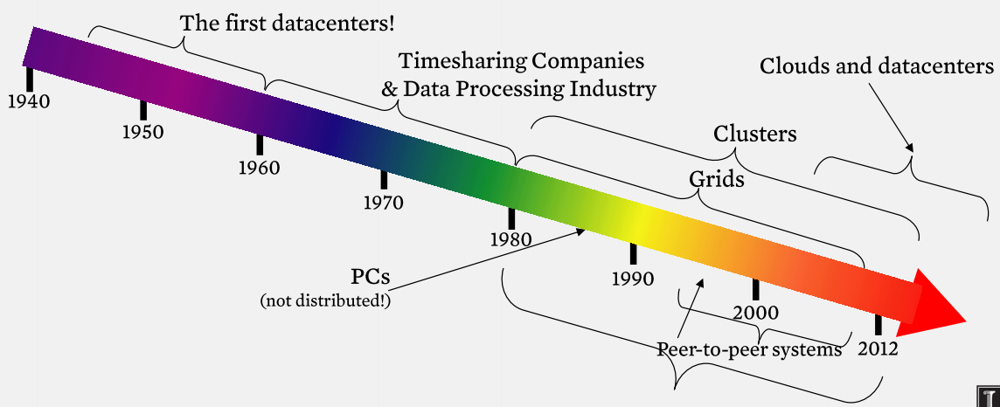
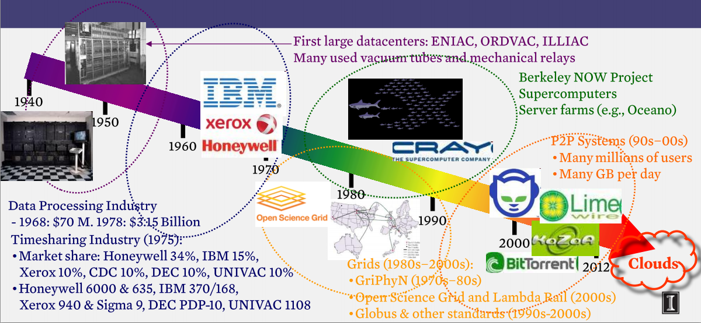
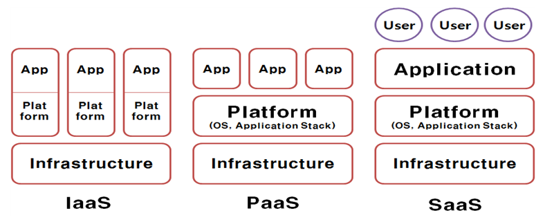
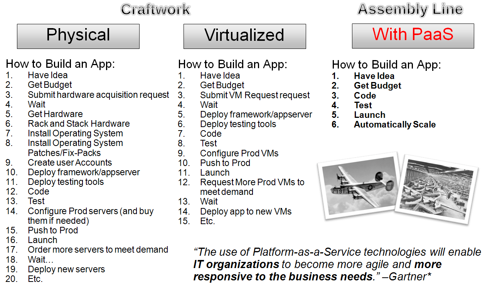
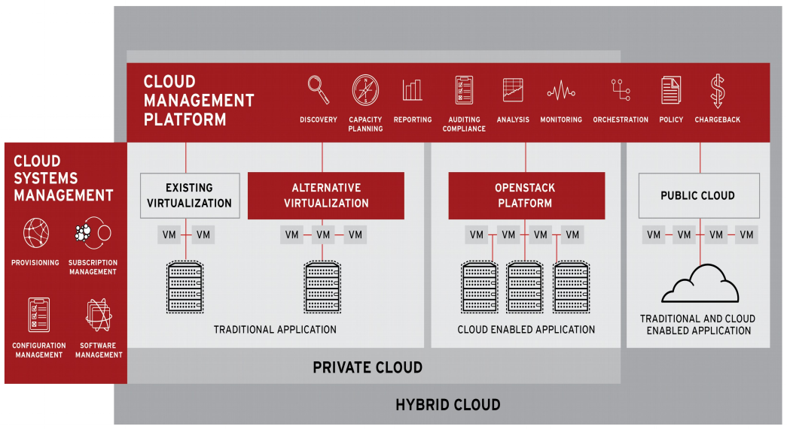
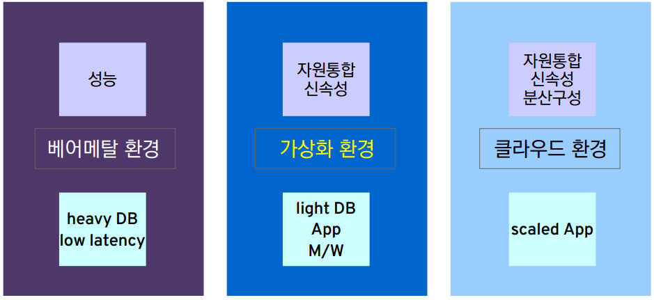
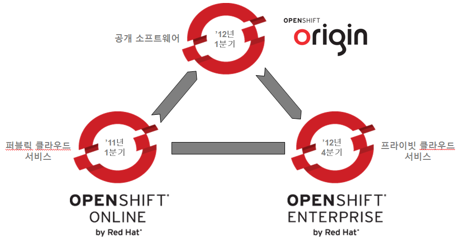

2015년 2월

클라우드 공급사
-
AWS (Amazon Web Services, 아마존 웹서비스)
- EC2(Elastic Compute Cloud): 컴퓨터
- S3(Simple Storage Service): 상대적 저속, 대용량 저장소
- EBS(Elastic Block Storage): 상대적 고속, EC2와 함께하는 저장소
- 구글 클라우드 엔진 (Google Compute Engine), Google AppEngine, Google Docs
- 마이크로소프트 애져 (Microsoft Azure), 오피스 365
- 기타: Salesfore.com, EMC, KT-uCloud, SKT-Cloud, ...
클라우드 역사
출처: Indranil Gupta, Illinois university
클라우드 산업 역사
출처: Indranil Gupta, Illinois university
IaaS, PaaS, SaaS
PaaS로 진화
하이브리드 클라우드 (기업관점)
클라우드 선택 비고 (기업관점)
레드햇(Redhat) 클라우드 사례
현재 클라우드 4가지 기능(Feature)
- 대규모 (Massive Scale)
-
온디맨드 접근 (On-demand Access):
종량제, 고정비 투자 없음. -
데이터 집약적 특성 (Data-intensive Nature):
MB → GB → TB → PB → XB -
클라우드 프로그래밍 패러다임:
MapReduce/Hadoop, NoSQL, Open Source, ...
출처: Indranil Gupta, Illinois university